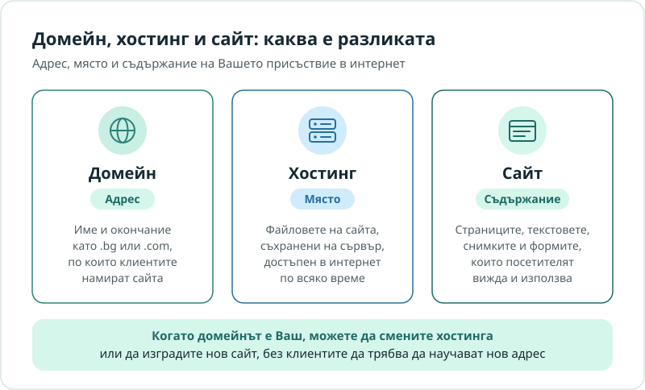
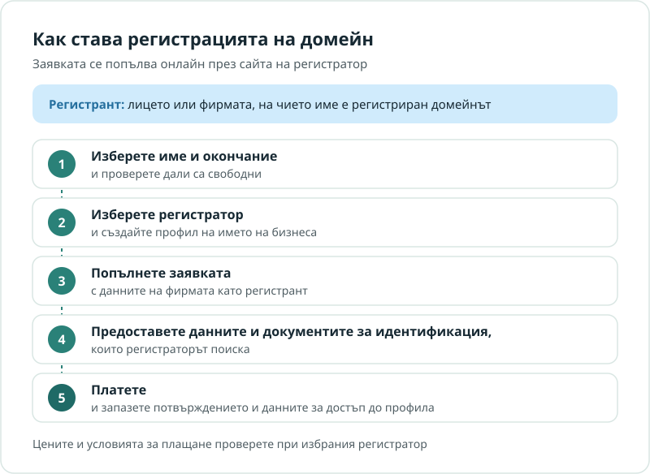

Съвети
Какво е домейн и как да изберете име за бизнеса си
Домейнът е адресът, който хората пишат в браузъра, за да стигнат до Вашия сайт. Той се състои от име, което Вие избирате, и окончание като .bg или .com. По-долу ще намерите с какво домейнът се различава от хостинга и от самия сайт, как да изберете име и окончание и как работят регистрацията и подновяването. Още преди пускането на сайта домейнът трябва да бъде регистриран на Вашия бизнес, а достъпът до него да остане у Вас. Тук не препоръчваме конкретни фирми и не сравняваме цени.
Обновено
Каква е разликата между домейн, хостинг и сайт?
Трите понятия често се споменават заедно, но всяко означава различно нещо. Удобно е да ги възприемате като адрес, място и съдържание на Вашето присъствие в интернет.

- Домейн. Домейн името заедно с окончанието, по които клиентите намират сайта и които могат да стоят и в имейл адресите на фирмата.
- Хостинг. Услугата, при която файловете на сайта се съхраняват на сървър, достъпен в интернет по всяко време.
- Сайт. Самите страници, текстове, снимки и форми, които посетителят вижда и използва.
Домейнът и хостингът могат да бъдат при един и същ доставчик или при различни. Когато домейнът е Ваш, можете да смените хостинга или да изградите нов сайт, без клиентите да трябва да научават нов адрес.
.bg или .com: кое окончание да изберете?
Окончанието е частта след последната точка в адреса. Окончанието .bg е националното за България, а .com е международно и не е свързано с определена държава.
Изборът зависи главно от това къде са клиентите Ви. Ако работите основно с хора в България, адрес с .bg показва ясно откъде е бизнесът. Ако продавате и в други държави или планирате да го правите, .com може да е по-естественият избор за чуждестранните клиенти.
Полезно е да проверите дали името е свободно и в двете окончания. Ако е свободно, можете да регистрирате и двете и едното да препраща към другото, така че второто да не бъде заето от фирма с подобна дейност. Като основно окончание изберете адреса, който клиентите Ви ще запомнят по-лесно.
Как да изберете добро име за адреса на сайта?
Доброто име се запомня след едно чуване и се изписва без грешки. При избор на домейн кажете името на глас на човек, който не познава бизнеса, и го помолете да го напише.
- Кратко име, което съвпада с името на бизнеса или е много близо до него.
- Лесно за изговаряне и изписване, без букви, които хората изписват различно на латиница, като „щ“, „ж“ или „ю“.
- Без излишни тирета и цифри, които трябва да обяснявате по телефона.
- Без прилика с чужда марка или с името на конкурент.
- Име, което няма да се наложи да сменяте, ако добавите нови услуги или отворите обект в друг град.
Проверете дали името е свободно, преди да поръчате табела, визитки или реклама. Проверката става в сайта на регистратор, т.е. фирма, чрез която се регистрират домейни.
Може ли адресът да е на кирилица и кои символи са позволени?
За домейните с окончание .bg правилата са записани в общите условия на регистъра на областта .bg. Според тях името може да съдържа латински букви, букви на кирилица, цифри и знака минус, като първият и последният символ трябва да бъдат буква или цифра. Дължината на името е поне 3 и най-много 63 символа. Име на кирилица трябва да съдържа само букви от кирилицата и поне една буква, която визуално се различава от латинските, например „б“, „д“ или „ж“.
Кирилското име се чете естествено от клиентите в България. Преценете обаче как ще го въвеждат хората, които пишат на телефон или компютър с латинска клавиатура. Ако се колебаете, можете да регистрирате двата варианта, на кирилица и на латиница, и единият да води към другия.
Как става регистрацията и кой е регистрантът?
Регистрацията на домейн става чрез регистратор, като заявката се попълва онлайн през неговия сайт. Лицето или фирмата, на чието име е регистриран домейнът, се нарича регистрант. Всеки домейн има един регистрант, а при регистрацията на .bg домейн се изисква идентификация на регистранта.

- Изберете име и окончание и проверете дали са свободни.
- Изберете регистратор и създайте профил на името на бизнеса.
- Попълнете заявката с данните на фирмата като регистрант.
- Предоставете данните и документите за идентификация, които регистраторът поиска.
- Платете и запазете потвърждението и данните за достъп до профила.
Цените и условията за плащане проверете при избрания регистратор, преди да подадете заявката.
Какво става, ако регистрацията не бъде подновена?
Домейнът се плаща периодично, затова регистрацията му трябва да се подновява. За .bg домейните общите условия на регистъра предвиждат годишна такса за поддръжка. Ако таксата не бъде платена нито в срок, нито в допълнителния срок, регистрацията се прекратява и домейнът се освобождава за регистрация от други.
В такъв случай сайтът и имейлите на този адрес могат да спрат да работят, а името може да бъде регистрирано от друг. Няколко прости навика намаляват този риск.
- Получавайте напомнянията за подновяване на имейл, който някой от фирмата чете редовно.
- Включете автоматично подновяване, ако регистраторът го предлага.
- Отбележете датата на изтичане в календара на фирмата.
- Обновявайте данните за контакт при регистратора, когато смените имейл или телефон.
Защо адресът трябва да е регистриран на Вашата фирма?
Домейнът трябва да е регистриран на Вашата фирма, а Вие трябва да имате собствен достъп до профила при регистратора. Регистрантът е този, на чието име е домейнът, и това има значение, когато сменяте изпълнител, хостинг или сайт.
Понякога домейнът е включен в пакет за сайт или хостинг. Друг вариант е адрес на поддомейн, при който името на платформата е част от адреса на Вашия сайт. И в двата случая проверете няколко неща, преди да отпечатате адреса на визитки и материали.
- На чие име е регистриран домейнът и кой е посочен като регистрант.
- Кой има достъп до профила при регистратора и до паролата.
- Какви са условията за подновяване след първия период.
- Дали можете да прехвърлите домейна или адреса, ако смените доставчика.
При поддомейн адресът обикновено принадлежи на платформата, затова при смяна на платформата ще Ви трябва нов адрес. Ако сайтът Ви е изграден от външен изпълнител, поискайте писмено данните за достъп до домейна и ги пазете там, където има достъп и някой от фирмата.
Какво следва, след като адресът е Ваш?
Когато адресът е избран и регистриран на Вашия бизнес, остава съдържанието зад него. Ако подготвяте нов сайт за бизнеса си или онлайн магазин, Xtra AI изгражда сайтове и онлайн магазини за малки бизнеси и поддържа сайтовете след пускането им. Адресът на сайта стои и в бизнес профила Ви в Google, затова е добре там да е посочен същият домейн.
Ако не сте сигурни откъде да започнете, безплатната диагностика показва къде бизнесът Ви губи време. След нея следват 30-минутен разговор и оферта с приоритизирани решения и ясни еднократни цени.
Често задавани въпроси
Какво представлява домейнът с прости думи?
Домейнът е адресът на Вашия сайт в интернет, който клиентите пишат в браузъра. Той се състои от име, което избирате, и окончание като .bg или .com.
Трябва ли домейнът и хостингът да са при една и съща фирма?
Не е задължително. Домейнът и хостингът могат да бъдат при различни доставчици, а когато домейнът е регистриран на Вашия бизнес, можете да смените хостинга, без да сменяте адреса.
Мога ли по-късно да сменя домейна на бизнеса?
Можете да регистрирате нов домейн, но визитките, профилите и рекламите ще продължат да сочат към стария адрес. По-лесно е да изберете името внимателно още в началото и да пазите стария домейн подновен, докато обновите всички материали.
Какво се случва с домейна, ако сменя изпълнителя на сайта?
Ако домейнът е регистриран на Вашата фирма и имате достъп до профила при регистратора, адресът остава Ваш и може да бъде насочен към новия сайт. Поискайте данните за достъп писмено и ги пазете във фирмата.
Колко струва регистрацията на домейн?
Цените се определят от регистраторите и зависят от окончанието, затова ги проверете при избрания регистратор, преди да подадете заявка. Проверете и цената за подновяване, защото домейнът се плаща периодично.
Какво да проверя, ако домейнът е включен в пакет за сайт или хостинг?
Проверете на чие име е регистриран домейнът, кой има достъп до профила при регистратора и какви са условията за подновяване след първия период. Ако адресът е поддомейн на платформа, той обикновено принадлежи на платформата и при смяна на доставчика ще Ви трябва нов адрес.
Свързани услуги
- Изработка на сайтИзграждаме сайтове за малки бизнеси и ги поддържаме след пускането, с кратък месечен отчет.Научете повече
- Онлайн магазинИзграждаме онлайн магазини за малки бизнеси и можем да добавим към тях отговори за пратки, SEO описания на продукти и напомняния за изоставени колички.Научете повече
- Безплатна диагностикаОтбележете ситуациите, които познавате от своя бизнес, и вижте ориентировъчно колко часа седмично отнемат.Научете повече
Първата стъпка е безплатна
Диагностиката не Ви обвързва с нищо. Показваме Ви точно какво можем да поправим и колко ще струва.